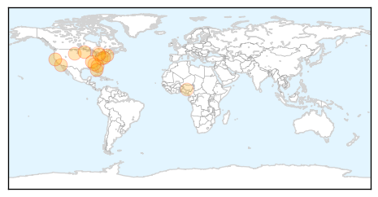
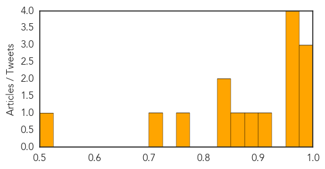
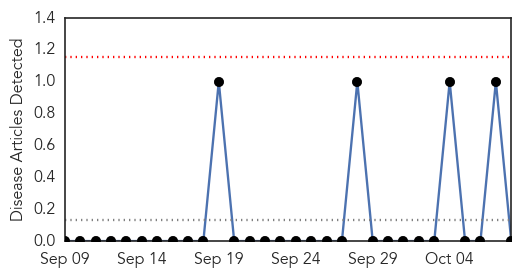

Influenza
30-Day Web Trend
11 alerts, 11 warnings

30-Day Twitter Trend
2 alerts, 0 warnings

Article Locations
Article Confidences
Top Articles:
- 0.997
- Health officials: Take sickness seriously
- 0.996
- Washoe Health Officials Await Enterovirus Test Results
- 0.995
- Holyoke Soldiers Home sets flu vaccine clinics
- 0.971
- Fight the flu Get your flu shot
- 0.970
- Flu vaccine coming late from manufacturing problems
- 0.961
- WTOC-TV: Savannah, Beaufort, SC, News, Weather & Sports
- 0.961
- Polk County: First EV-D68 case in Florida recovering, call on public to be vigilant against respiratory infections
- 0.902
- Health Department offering flu shots
- 0.888
- Do-it-yourself flu vaccine? Study shows it works
- 0.872
- N.S. health-care workers could face mask or flu shot policy
- 0.840
- South Dakota reports first flu detections of season
- 0.827
- Do-it-yourself flu vaccine? Study shows it works
- 0.769
- Mathuram Santosham Receives 2014 Fries Prize for Improving Health
- 0.722
- NLC canvasses support for W'Africa on Ebola
- 0.508
- model airplane pilots, consult your manuals
Top Tweets:
-
No tweets found for Oct 08, 2014
Mold/Fungal
30-Day Web Trend
0 alerts, 0 warnings

30-Day Twitter Trend
0 alerts, 0 warnings

Article Locations

Article Confidences

Top Articles:
-
No articles found for Oct 08, 2014
Top Tweets:
-
No tweets found for Oct 08, 2014